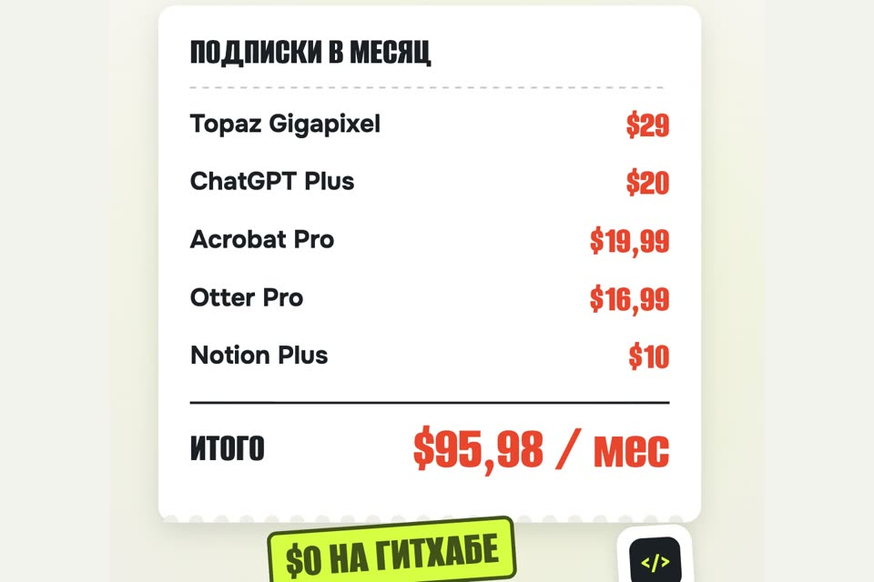

5 программ с GitHub, которые отдают даром
Пять ссылок из ролика: что заменяет каждая программа, сколько стоит платный аналог и где бесплатная версия слабее.
- бесплатно
- открытый код
- без кода
К ролику «Платишь за подписку то, что на гитхабе бесплатно» · обновлено 28 октября 2026

Качайте только со страницы Releases на GitHub или с сайта проекта по ссылкам ниже. Сборки с «торрентов» и сайтов-зеркал не берите: это открытый код, и подделать установщик легко.
Пять программ
Upscayl — делает мутное фото чётким
Вместо Topaz Gigapixel за $29 в месяц.
Увеличивает и улучшает фото низкого разрешения нейросетью, прямо на вашем компьютере. upscayl/upscayl · 51 223 звезды · лицензия AGPL-3.0.
- Установщики: .dmg для macOS, .exe для Windows, AppImage, deb и rpm для Linux.
- Скачали, перетащили фото в окно, выбрали модель, нажали «Upscayl».
Нужна видеокарта с поддержкой Vulkan. По словам авторов, многие встроенные видеокарты не подходят, но попробовать можно.
Рядом с исходником появится увеличенная копия. Чудес не будет: лица и мелкий текст нейросеть может «дорисовать» не так, как было.
Jan — чат-бот, который работает без интернета
Вместо ChatGPT Plus за $20 в месяц.
Скачивает открытые языковые модели и запускает их у вас на компьютере, переписка остаётся у вас. janhq/jan · 45 131 звезда · лицензия Apache-2.0.
- Установщики: .dmg (macOS), .exe (Windows), deb и AppImage (Linux).
- После установки выберите модель в каталоге внутри программы и скачайте её один раз. Дальше интернет не нужен.
Это не ChatGPT. Качество ответов зависит от модели, которую тянет ваш компьютер: на ноутбуке с 8–16 ГБ памяти маленькие модели заметно слабее платных. Для черновиков, пересказов и личных заметок хватает.
Окно чата, которое отвечает при выключенном Wi-Fi.
Stirling PDF — режет, склеивает и подписывает PDF
Вместо Adobe Acrobat Pro за $19,99 в месяц.
По словам авторов, больше 50 инструментов: редактировать, склеить, разделить, подписать, закрасить, сконвертировать, распознать текст, сжать. Stirling-Tools/Stirling-PDF · 95 258 звёзд · лицензия MIT для основной части (open-core).
- Десктоп-версия: .dmg (macOS), .msi и .exe (Windows), AppImage, deb, rpm (Linux).
- Документы обрабатываются у вас, никуда не отправляются.
Окно со списком инструментов: перетащите PDF и выберите действие.
Buzz — расшифровывает созвоны без интернета
Вместо Otter Pro за $16,99 в месяц.
Переводит аудио и видео в текст на вашем компьютере, работает на Whisper от OpenAI. Умеет файлы, ссылки YouTube, запись с микрофона, разделение по спикерам, экспорт в TXT, SRT и VTT. chidiwilliams/buzz · 22 242 звезды · лицензия MIT.
- Установщики: .dmg для Mac на Apple silicon и Intel, .exe для Windows. В Linux — Flatpak или Snap.
- Windows покажет предупреждение, потому что установщик не подписан: «Подробнее» → «Выполнить в любом случае».
В Mac App Store Buzz продаётся за деньги. Бесплатная версия — та, что на GitHub и SourceForge.
Текст созвона с таймкодами. Русский язык Whisper понимает, но имена и термины проверяйте глазами.
AppFlowy — заметки и задачи, как в Notion, но данные у вас
Вместо Notion Plus за $10 в месяц.
Авторы называют его открытой альтернативой Notion: страницы, вики, задачи, базы. AppFlowy-IO/AppFlowy · 77 899 звёзд · лицензия AGPL-3.0.
- Десктоп: macOS, Windows, Linux. Есть приложения для iPhone и Android.
- Синхронизация между устройствами — через облако AppFlowy или свой сервер (инструкция по self-hosting).
Рабочее пространство со страницами и задачами. Переезд из Notion мы не проверяли.
Откуда цифры в ролике
Цены подписокофициальные страницы, 28 октября 2026
- Topaz Gigapixel — $29 в месяц с отменой в любой момент, $19 при оплате на год (topazlabs.com/pricing).
- ChatGPT Plus — $20 в месяц, только помесячно (справка OpenAI).
- Adobe Acrobat Pro — US$19,99 в месяц на годовом плане с помесячной оплатой (adobe.com; в другой стране сайт покажет свою валюту).
- Otter Pro — $16,99 в месяц при помесячной оплате, $8,33 при годовой (otter.ai/pricing).
- Notion Plus — $10 в месяц за участника при оплате на год (notion.com/pricing).
Сумма: 29 + 20 + 19,99 + 16,99 + 10 = 95,98 доллара в месяц. Тарифы разные: часть помесячные, часть годовые. Цены меняются, перед покупкой сверяйтесь со страницей сервиса.
Звёзды и лицензииGitHub API, 28 октября 2026
- upscayl/upscayl — 51 223, AGPL-3.0
- janhq/jan — 45 131, Apache-2.0
- Stirling-Tools/Stirling-PDF — 95 258, MIT + закрытые части для компаний
- chidiwilliams/buzz — 22 242, MIT
- AppFlowy-IO/AppFlowy — 77 899, AGPL-3.0
Сами программы мы не запускали: описания взяты из README проектов.
Если застряли
macOS не открывает программу
Откройте «Системные настройки» → «Конфиденциальность и безопасность», внизу будет кнопка «Всё равно открыть». Так бывает с программами не из App Store.
Upscayl выдаёт ошибку или пустую картинку
Скорее всего, видеокарта не поддерживает Vulkan. Попробуйте другую модель в настройках; если не помогло, на этом компьютере Upscayl не заработает.
Jan отвечает очень медленно
Модель слишком большая для вашего компьютера. Выберите модель поменьше в каталоге Jan.
Чего это не гарантирует
- Того же качества, что у платных сервисов. Jan слабее ChatGPT, Upscayl может ошибаться на лицах, AppFlowy — не копия Notion и устроен по-своему.
- Поддержки. Пишете в issues на GitHub и ждёте, никто не обязан отвечать.
- Работы на любом компьютере: нейросетевым программам (Upscayl, Jan, Buzz) нужны видеокарта или чип Apple silicon и память.
- Звёзды на GitHub — это популярность, а не проверка безопасности.